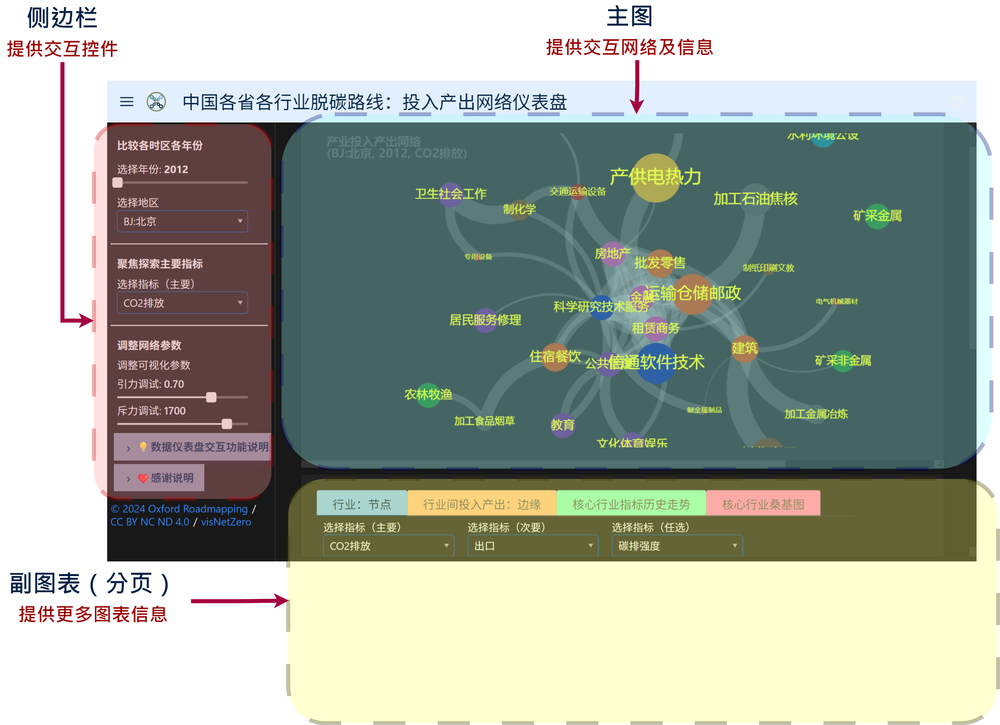

3. 📈副图表#
副表及副图，位于仪表盘布局正下方，有 分页表 (tabs) 整合更多图表信息，亦有交互控件。
列出相关图表如下述：
分页1 → 行业（表格）：节点
分页2 → 行业间投入产出（表格）：边缘
分页3 → 指标走势（图）：核心行业指标历史走势
分页4 → 核心桑基（图）：核心投入产出行业关系
各图表均有交互功能。表可以排序、过滤信息。指标走势图可高亮个别曲线，核心桑基图可供用户自行排版。
交互功能之一：可按 排名 或 数值 排序
所有表格均有排序功能，可以按 排名 或 数值 进行排序比较。
副表及副图，位于仪表盘布局正下方。

副图表布局：正下方
副图表布局位于正下方。